間々観音/愛知県
愛知県の小牧市にある間々観音は「おっぱい観音」として一部好事家の間では鉄板ネタとなっているところだ。
これまでも数多くの方から情報をお寄せいただきましてありがとうございます、的なお寺だったが以前寄った時はあまりちゃんと見なかったので再訪してみた。
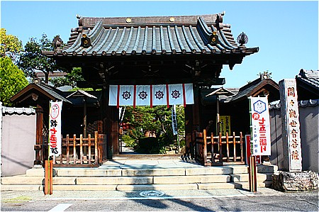
境内には早速おっぱい噴水が。さすがおっぱい観音。
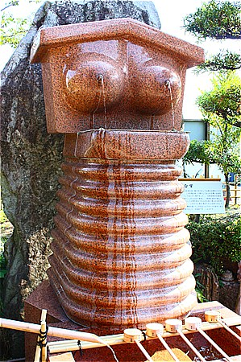
水鉢の下のヒダヒダは何？
もしかしてお腹？1.2.3.4.…9段腹！
うむー。さすがおっぱい観音！豊穣の証。
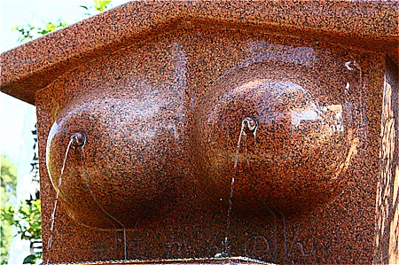
さらにおっぱい香炉も。意味は判りませんが少なくともこのお寺はおっぱいメインで認知されているのを自覚しているのは間違いなさそう。
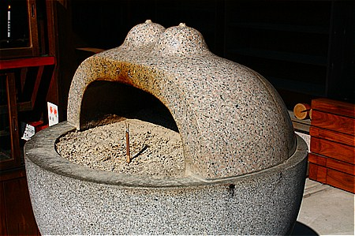
訪問時は丁度七五三の時期であった。
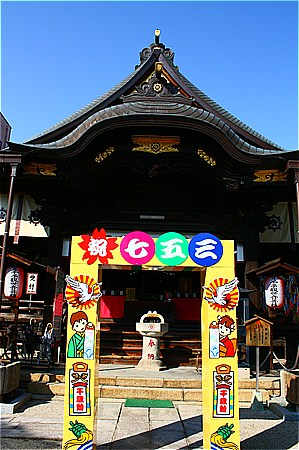
で、本堂の前には大量の乳絵馬が奉納されていた。
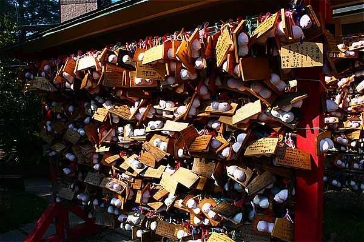
通常、伝統的な乳絵馬といえば板の絵馬に布で作られた乳型がついているスタイルが一般的だが、ここ、間々観音で提供している乳絵馬は張り子の乳型である。
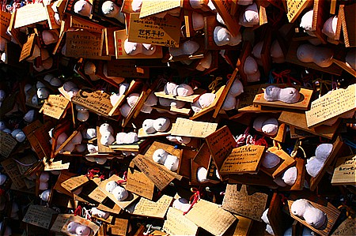 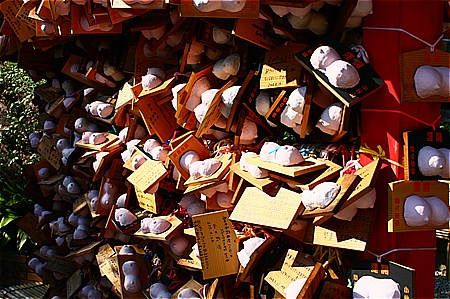
それにしても凄い量の絵馬だね…。
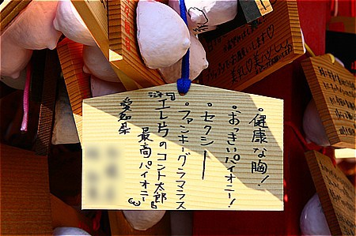
エレ片のコント太郎かあー。
と思ったら伝統的なスタイルの乳絵馬は手作り絵馬専用の場所に奉納されていた。
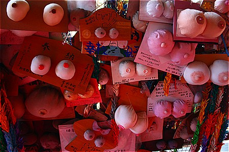 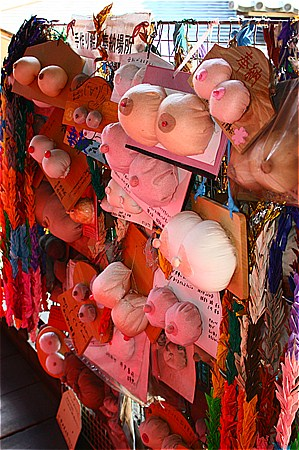
やっぱりこっちの方が奉納者が手を入れているだけあって真剣味がありますねー。
奉納者それぞれのおっぱいの解釈が見て取れて興味深い。
チョットネタっぽい絵馬もありますけど。
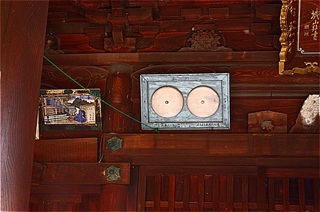
こちらはさらにオールドスクールな乳絵馬。お盆のような平たいおっぱい。
お守りや乳絵馬が売られている売店の脇にあった乳を飲ませる観音サマの図。
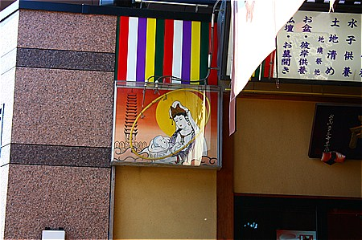
で、それを図案化した顔出し看板。
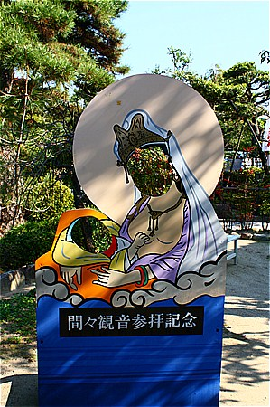
で、それを立体化した石像。
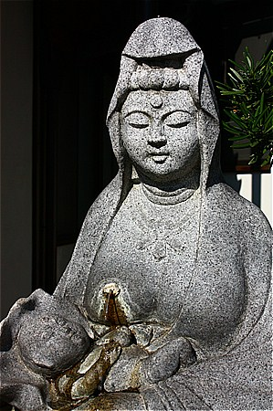
ああ、ちゃあんとおっぱいから水が出てるんだ…。
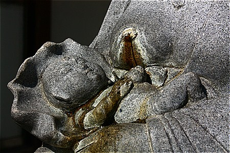
意味ありげな二股の木。
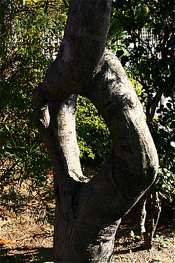
乳絵馬奉納は全国的に分布している習俗だが、これほど広域の信仰圏をもつところも少ないだろう。
2000.04. 2009.11.
珍寺大道場 HOME